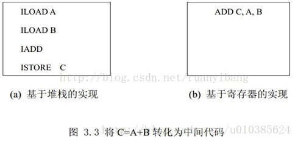
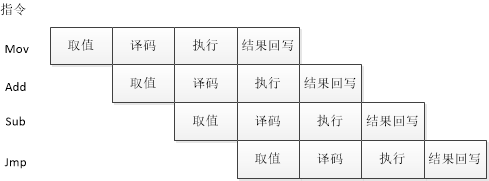

个人理解
1.基于栈的指令架构和基于寄存器的指令架构，根据编译器的不同、cpu的不同而论。
2.基于栈的指令架构的执行程序使用的cpu指令比较少，编译出来的程序较小， 有操作数栈的概念，处理函数调用、递归简单明了，但是需要使用更多的指令，不能充分利用cpu的寄存器实现缓存，效率比寄存器架构慢，因为不考虑寄存器分配，因此实现简单。
3.基于寄存器的指令架构的执行程序使用的cpu指令比较多，编译出来的程序较大，无操作数栈的概念，使用的指令比较少，可充分利用寄存器来做缓存，更能实现乱序和并行，效率比栈架构高，但实现很复杂
4.使用栈架构的大部分是基于虚拟机的语言，如jvm、python、.net。使用寄存器架构的大部分是编译性的语言，如c/c++
5.jvm是基于栈的指令架构，但是并不就是没有使用寄存器，只是说用得相对较少，而且在不支持栈架构的处理器上还需要使用寄存器指令来对应java字节码指令。
基于堆栈的(Stack-based ) 和基于寄存器(Register-based) 的虚拟机区别
虚拟机可分为两种：基于堆栈的(Stack-based ) 和基于寄存器(Register-based) 的虚拟机。基于堆栈的虚拟机也定义了少量的寄存器，基于寄存器的虚拟机也有堆栈，其区别体现在它们提供的指令集体系结构(ISA ，Instruction Set Architecture) 。ISA 是处理器的一部分，对于编译器实现者和程序员是可见的，ISA 是硬件和软件之间的接口。基于堆栈的虚拟机的指令比基于寄存器的指令要小，因为在指令中不需要指定操作数。基于堆栈的虚拟机使用堆栈来保存中间结果、变量等，基于寄存器的虚拟机则支持寄存器的指令操作。基于堆栈的虚拟机需要用Push 、Pop 来传送数据，通常，完成同样的工作，基于寄存器的虚拟机所采用的指令数比基于堆栈的虚拟机采用的指令数目少，可以提高执行效率。例如，将语句 C=A+B转化为中间代码，如图3.3所示。

这里写图片描述
堆栈虚拟机指令很低级，基于寄存器的处理器有更强大的指令功能，而且易于调试。
基于堆栈的处理器在处理函数调用、解决递归问题和切换上下文时简单明快。
采用寄存器架构时，虚拟机需要经常保存和恢复寄存器中的内容，还要考虑对操作数的寻址问题等，因此，基于堆栈的虚拟机实现起来更简单，基于寄存器的虚拟机能提供更强大的指令集。
大多数虚拟机是基于堆栈的，如Pascal’s P-machine 、Java 的JVM和微软的.Net 环境。当前流行的 Lua 脚本语言，5.0之前的版本也是基于堆栈的，5.0之后改为基于寄存器实现。虚拟机实现越复杂，解密者也就越难破解，但是其实现成本也高。
基于寄存器的虚拟机需要用寄存器来保存中间结果、变量等，而基于堆栈的虚拟机使用堆栈即可。例如，针对同一条指令：Add，基于堆栈的处理器的首先从堆栈里Pop两个数，然后将两数相加，再把和Push到堆栈，Add指令只占用1个字节，而基于寄存器的处理器的对应指令为AddR1，R2，113，Add指令至少要占用4个字节。通过以上比较可以看出，基于堆栈的体系架构实现较为简单，但其运行效率不如基于寄存器的，而基于寄存器的体系结构在编译后的代码结构上又不如基于堆栈的简洁。对于同一个程序，为基于堆栈的机器编译出来的版本要比为基于寄存器的机器编译出来的版本小好几倍。
基于堆栈的指令集能够让字节码更紧凑，可以提高Cache的利用率，而且实现起来也比基于寄存器的机器要简单。而基于寄存器的虚拟机虽然代码大小有所增加，但是带来的性能提升更加突出
基于栈的虚拟机 VS 基于寄存器的虚拟机
一直对虚拟机这个黑盒非常感兴趣，由于从前都是直接学习x86或者ARM这些实际的体系结构，什么寄存器、ALU、CPU、总线、乱序执行和Cache等相关的观念都已经烂熟于心。另外在学习C++或者C语言时，对函数调用栈帧非常熟悉，什么函数调用前压参、保存寄存器值、EBP、ESP或者函数返回值如何传递，更深层次的如对象的this指针如何传递，或者C++的RTTI以及C++内部的实现机制。但是对java里面的实现机制确实一知半解，为什么人们说对象都是分配在堆上（这个是Java语义模型决定的，C++是值模型，而Java是值模型和引用模型混合的，Builtin Type是值模型，UserDefined Type是引用模型，也就是分配在堆上 — 当然JVM应该有相应的优化措施，因为大量简单的小对象也分配在堆上的话，会增加GC的压力），JVM中的栈和C++中的栈不是一种概念。
刚接触到虚拟机这个概念的时候，有点儿茫然，虽然知道JVM相关的概念，什么字节码，什么JIT，什么GC啊，但是这些了解只是浅尝辄止，并没有什么实质性的认识。再遇上lua或者python的实现机制，更是云里雾里。
那么虚拟机到底是什么，是怎么工作的，为什么要设计成这样？在这篇文章中，我就简单叙述一下最近对虚拟机的理解。
什么是虚拟机
虚拟机是借助于操作系统对物理机器的一种模拟。但是我们今天所讲述的虚拟机概念比较狭义，与vmware或者virtual-box不同，而是针对具体语言所实现的虚拟机。例如在JVM或者CPython中，JAVA或者python源码会被编译成相关字节码，然后在对应虚拟机上运行，JVM或CPython会对这些字节码进行取指令，译码，执行，结果回写等操作，这些步骤和真实物理机器上的概念都很相似。相对应的二进制指令是在物理机器上运行，物理机器从内存中取指令，通过总线传输到CPU，然后译码、执行、结果存储。
虚拟机为了能够执行字节码，需要模拟出物理CPU能够执行的相关操作，与虚拟机实现相关的概念如下：
（1）将源码编译成VM所能执行的具体字节码。
（2）字节码格式（指令格式），例如三元式，树还是前缀波兰式。
（3）函数调用相关的栈结构，函数的入口，出口，返回以及如何传参。还有为了能够顺利返回所需的相关栈帧信息如何布置。
（4）一个“指令指针”，指向下一条待执行的指令（内存中），对应物理机器的EIP。
（5）一个虚拟“CPU”-指令调度器，
获取下一条指令
对操作数进行解码
执行这条指令
这三点是解释器执行字节码最重要的开销。
虚拟机的实现方式
如今虚拟机的实现方式有两种，基于栈的和基于寄存器的，这两种实现方式各有优劣，也都有标志性的产品。基于栈的虚拟机，有JVM，CPython以及.Net CLR。基于寄存器的，有Dalvik以及Lua5.0，另外Perl听说也要改为基于寄存器方式。无论这两种方式实现机制如何，都要实现以下几点：
取指令，其中指令来源于内存
译码，决定指令类型（执行何种操作）。另外译码的过程要包括从内存中取操作数
执行。指令译码后，被虚拟机执行（其实最终都会借助于物理机资源）
存储计算结果
其实这和物理机CPU的执行是很相似的，都包括取值，译码，执行，回写等步骤。但是不同的一点是虚拟机应该模仿不出流水线，例如在当前指令译码完成之后，CPU中的译码部件处于空闲状态，可以用来对下一条指令进行译码，所以流水线有多少级就相当于可以并行执行多少指令。当然中间还有些指令相关和乱序的概念，这里就不详说了。
下图中一个典型的指令流水线结构，由于虚拟机在操作系统上通过程序模拟，遵循冯诺依曼结构顺序执行的，应该很难实现出流水线结构。

基于栈的虚拟机
基于栈的虚拟机有一个操作数栈的概念，虚拟机在进行真正的运算时都是直接与操作数栈（operand stack）进行交互，不能直接操作内存中数据（其实这句话不严谨的，虚拟机的操作数栈也是布局在内存上的），也就是说不管进行何种操作都要通过操作数栈来进行，即使是数据传递这种简单的操作。这样做的直接好处就是虚拟机可以无视具体的物理架构，特别是寄存器。但缺点也显而易见，就是速度慢，因为无论什么操作都要通过操作数栈这一结构。
由于执行时默认都是从操作数栈上取数据，那么就无需指定操作数。例如，x86汇编”ADD EAX, EBX”，就需要指定这次运算需要从什么地方取操作数，执行完结果存放在何处。但是基于栈的虚拟机的指令就无需指定，例如加法操作就一个简单的”Add”就可以了，因为默认操作数存放在操作数栈上，直接从操作数栈上pop出两条数据直接执行加法运算，运算后的结果默认存放在栈顶。其中操作数栈（operand stack）的深度由编译器静态确定，方便给栈帧预分配空间。这个和不能再栈上定义变长数组相似（其实这句话不严谨的，栈上分配变长数组，需要编译器的支持，分配在栈顶），由于局部变量的地址只能在编译期（compile time）确定针对当前栈帧的offset，如果中间有一个变量是一个变长数组的话，那么后面变量的offset就无法确定了（vector的数据是分配在堆上的，自己控制）。
例如执行”a = b + c”，在基于栈的虚拟机上字节码指令如下所示：
1
2
3
4
由于操作数都是隐式地，所以指令可以做的很短，一般都是一个或者两个字节。但是显而易见就是指令条数会显著增加。而基于寄存器虚拟机执行该操作只有一条指令，
1
其中a，b，c都是虚拟寄存器。操作数栈上的变化如下图所示：
首先从符号表上读取数据压入操作数栈，

然后从栈中弹出操作数执行加法运算，这步操作有物理机器执行，如下图所示：

从图示中可以看出，数据从局部变量表中还要经过一次操作数栈的操作，注意操作数栈和局部变量表都是存放在内存上，内存到内存的数据传输在x86的机器上都是要经过一次数据总线传输的。可以得出一次简单的加法基本上需要9次数据传输，想想都很慢。
但是基于栈的虚拟机优点就是可移植，寄存器由硬件直接提供。使用栈架构的指令集，用户程序（编译后的字节码）不会直接使用硬件中的寄存器，同时为了提高运行时的速度，可以将一些访问比较频繁的数据存放到寄存器中以获取尽量好的性能。另外，基于栈的虚拟机中指令更加紧凑，一个字节或者两个字节即可存储，同时编译器实现也比较简单，不用进行寄存器分配。寄存器分配是一门大学问。
基于寄存器的虚拟机
前面提到过基于栈的虚拟机，这里我们简要介绍一下基于寄存器的虚拟机运行机制。
基于寄存器的虚拟机中没有操作数栈的概念，但是有很多虚拟寄存器，一般情况下这些寄存器（操作数）都是别名，需要执行引擎对这些寄存器（操作数）的解析，找出操作数的具体位置，然后取出操作数进行运算。
既然是虚拟寄存器，那么肯定不在CPU中（想想也不应该在CPU中，虚拟机的根本目的就是跨平台和兼容性），其实和操作数栈相同，这些寄存器也存放在运行时栈中，本质上就是一个数组。
新的虚拟机也用栈分配活动记录，寄存器就在该活动记录中。当进入Lua程序的函数体时，函数从栈中分配一个足以容纳该函数所有寄存器的活动记录。函数的所有局部变量都各占据一个寄存器。因此，存取局部变量是相当高效的。
上面就是Lua虚拟机对寄存器的相关描述，示意图如下：

从上图中我们可以看到，其实“寄存器”的概念只是当前栈帧中一块连续的内存区域。这些数据在运算的时候，直接送入物理CPU进行计算，无需再传送到operand stack上然后再进行运算。例如”ADD R3, R2, R1”的示意图就如下所示：

其实”ADD R3, R2, R1”还要经过译码的一个过程，当然当前这条指令的种类和操作数由虚拟机进行解释。后面我们会看到，在有些实现中，有一个很大的switch-case来进行指令的分派及真正的运算过程。

使用寄存器式虚拟机没有基于栈的虚拟机在拷贝数据而使用的大量的出入栈（push/pop）指令。同时指令更紧凑更简洁。但是由于显示指定了操作数，所以基于寄存器的代码会比基于栈的代码要大，但是由于指令数量的减少，其实没有大多少。
栈式虚拟机 VS 寄存器式虚拟机
（1）指令条数：栈式虚拟机多
（2）代码尺寸：栈式虚拟机
（3）移植性：栈式虚拟机移植性更好
（4）指令优化：寄存器式虚拟机更能优化
栈式 VS 寄存器式 | 对比 |
指令条数 | 栈式 > 寄存器式 |
代码尺寸 | 栈式 < 寄存器式 |
移植性 | 栈式优于寄存器式 |
指令优化 | 栈式更不易优化 |
解释器执行速度 | 栈式解释器速度稍慢 |
代码生成难度 | 栈式简单 |
简易实现中的数据移动次数 | 栈式移动次数多 |
解释器最重要的开销在于指令调度(instruction dispatch)，指令调度主要操作包括从内存中取出指令，然后跳转到解释器相对应的代码段，然后执行这条指令。其中一个简易实现就是使用switch-based的方式来进行，这种方式简单易实现，另外任何语言都有相应的switch语句。switch-based的指令调度，通过一个死循环不断的从内存取出指令来执行，针对不同的指令选择不同的执行方式。
一种JVM基于SBD实现方式如下图所示：

注：图片来自这里
这种方式实现加单，代码移植性好，但是有一个缺点就是分支预测失效的概率比较高。
现在的CPU都是基于流水线结构的，间接跳转指令的跳转结果需要等到执行级才能知晓，如果预测失败需要排空流水线，流水线级数越多分支预测失败导致流水线排空的时间越长。
由于编译后的指令是随机的，不太可能提取出预测模式。《》
CPU架构中的栈和寄存器？
栈和寄存器有一个简单的逻辑关系。寄存器是最顶 stack frame 的随机访问方式。
CPU 的寄存器是对逻辑寄存器的硬件优化。
基于栈的虚拟机就是每条指令只能访问 top-most 的一到两个 stack entry。基于寄存器的虚拟机是每条指令可以自由访问 top-most stack frame 里的任意 stack entry。
把虚拟机的定义放到 CPU 上来说，没有基于栈的 CPU。因为几乎所有 CPU 都允许访问栈的任何一个 entry。只能说 compiler 是否选择这些指令。不过，如果 CPU 的硬件寄存器比较少，top-most stack frame 都在主存里，习惯上就说是基于栈了。不过这个概念已经和虚拟机的分类法没什么关系了。
RISC CPU 一般硬件寄存器比较多。也就是说有更多的 top-most stack frames 可以做硬件优化。CISC 只是更少的硬件优化。
作者：冯东
来源：知乎
著作权归作者所有。商业转载请联系作者获得授权，非商业转载请注明出处。
其实是指令系统分成堆栈型和寄存器型。不光这两种，指令系统共有四种分类，堆栈型，累加器型，寄存器-存储器型和寄存器-寄存器型。分类的依据是操作数的来源。堆栈型默认的操作数都在栈顶，累加器型默认一个操作数是累加器，寄存器-存储器型的操作数可以是寄存器或者内存，寄存器-寄存器型除了访存指令，操作数都是寄存器。早期的计算机结构简单，为了简化指令，所以经常使用堆栈或者累加器型的指令，如今的CPU早就有足够的晶体管来支持复杂设计，为了性能着想，大量使用寄存器型的指令，原因在于寄存器离CPU最近，所以延时最短，取指最快，有利于主频提高。再次，寄存器的相关性容易判断，有利于实现指令流水，多发射和乱序执行，对提高并发有极大的好处。intel的X86还保留有累加器指令和堆栈型指令，这是为了历史兼容。很多现今的RISC处理器，除了load和store指令访存外，只支持对寄存器操作，不支持对堆栈以及内存的直接操作，所以这种体系结构又叫做load-store架构。
作者：龚黎明
来源：知乎
著作权归作者所有。商业转载请联系作者获得授权，非商业转载请注明出处。
x86一开始并没有使用太多的通用寄存器，原因之一（注意，只是之一）是当时的编译器无力进行寄存器分配，让编译器自动决定程序中众多变量哪些应该装入寄存器哪些应该换出、哪些变量应该映射到同一个寄存器上，并不是一件易事，JVM采用堆栈结构的原因之一就是不信任编译器的寄存器分配能力，转而使用堆栈结构，躲开寄存器分配的难题。
到80年代早期，IBM的G. J. Chaitin公开了他们的图染色寄存器分配算法之后，编译器的分配能力获得长足进步，形成了现在这样的编译器主导的寄存器分配格局，这个寄存器分配算法是IBM内部进行的一个RISC早期试验项目的一部分，但是我并没有看到有公开资料表明他们当时已经意识到RISC的寄存器数目将带来的性能暗示，而在图着色算法走向公开、成熟之前，RISC的理念就已经定型了，所以我也不认为RISC构建过程中有非常注重寄存器数目的考量，寄存器数目只是RISC发展中一个有意无意的副产品。当时RISC的主力推手之一，我们这个领域的泰山北斗David Patterson与DEC VAX团队的两位架构师Douglas W. Clark and William D. Strecker在《体系结构通讯》（CAN）上刊文论战时也并未以寄存器数目优势来说事。（推荐拙作一篇，RISC诞生与发展的缩影）
作者：知乎用户
来源：知乎
著作权归作者所有。商业转载请联系作者获得授权，非商业转载请注明出处。